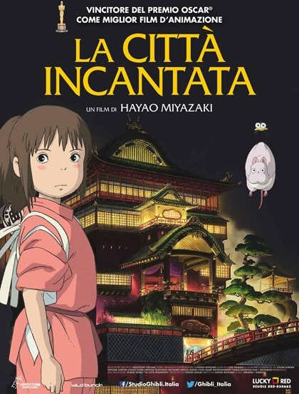

Lo Studio Ghibli
|
Studio Ghibli (株式会社スタジオジブリ Kabushiki-gaisha Sutajio Jiburi) è uno studio cinematografico di film d'animazione giapponese fondato nel 1985 a Tokyo da Hayao Miyazaki, Isao Takahata, Toshio Suzuki e Yasuyoshi Tokuma. |

|
|  |
I film realizzati sono tra i più visti nella storia del Giappone, e sono stati acclamati sia dalla critica giapponese sia da quella occidentale. Il loro film più famoso è La città incantata, il quale ha vinto l'Oscar al miglior film di animazione nel 2002, diventando così il primo (e finora l'unico) regista di anime a ricevere tale riconoscimento. |
| Lo Studio Ghibli | Hayao Miyazaki | La città incantata |